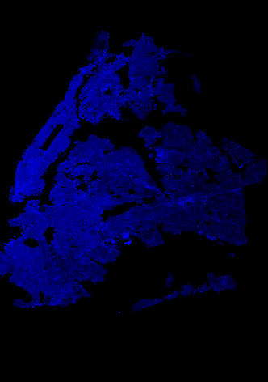
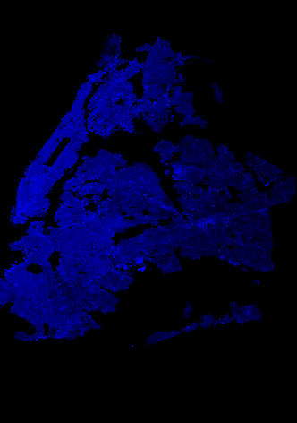

Building Area Fraction |
Average Building Height |
 Vegetation Index |
Albedo |
Elevations |
Water Influence |
This images are freely available, but if used in any publication (web based or print) please use the following acknowledgement or equivalent: Images furnished by the Manhattan Urban Heat Island Project, the NOAA-CREST Institute of the City College of New York with funding by the Consortium for Climate Risk in the Urban Northeast (CCRUN).
Status: Both summers are included, with instrument bias correction and detrending based on an ensemble of NYCmetnet.
These images show the data collected as field agents walked across Manhattan in a series of simultaneous walks between 2 and 3 pm on selected days. Only the average results of multiple walks are shown, with deviations calculated from the average for each day (daily anomalies) so that multiple days of different conditions can be averaged together. Details of how the data was processed to arrive at these images is contained in the dataset creation page.
These maps show on average (18 days streets, 11 days avenues) how the temperature, dewpoint and relative humidity change from the Manhattan-wide average between 2 and 3 pm on a summer day. Yellow indicates the average value, with colors ranging from green to blue indicating lower and colors from orange to red/purple indicating higher values.
Note that DewPoint represents the amount of water vapor in the air: the higher the dewpoint the higher the water vapor density. This makes it a more physical variable than Relative Humidity, which will change with temperature even if the amount of water vapor does not. RH is included due to its influence on health.
Average Standard Deviations from Manhattan Average
This is the same as the above maps, but using standard deviations instead of values. For example, a temperature anomaly of 3 degrees may be 2 standard deviations if a standard deviation is 1.5 degrees on that day. Since the variability of temperature changes from day to day, the number of standard deviations may be a better way to predict local variations.
Statistical Data Quality: Student T-test
The statistical quality of this data can be assessed by performing a Student T-test between the ensemble of values that go into the average of each geographical point, and an average ensemble of the whole of Manhattan. the T values shown in the maps below are calculated from the standard deviation of the data from all days at each point as compared to the average standard deviation of the whole data set.
The data shown below is collected in the same manner as above, except that the walks were along the "North-South" avenue axis of Manhattan rather than "East-West" street axis as above. Separate routes have different biases due to being largely in full sun, so correction has been done by matching endpoints. Due to the non-uniformity of relative humidity (it changes both with temperature and water vapor) it is omitted from the endpoint matching. This procedure also invalidated the T-test procedure, which is omitted as well. Despite the endpoint correction, relative differences between adjacent points were preserved. At this point only the deviations are shown, not the differences.
See the East-West results above for explanations of these images.
These images will show deviations from the fixed instrument average (anomalies) averaged over the 3 month period the instruments were in place: June 20 - Sept 21, 2013. Due to convective fluctuations the temperature at any given time is taken as the average during an hour surrounding the time given: for example a 3 pm temperature is actually the average temperature from 2:30 to 3:30 pm.
The variability is lower than for the street level campaigns, but for purposes of comparison the scale is kept the same. The 3 pm column would correspond to the end of the street level walks.
Temperature Differences from Average (C) | |||
|---|---|---|---|
Dewpoint Differences from Average (C) | |||
Relative Humidity Differences from Average (%) | |||
Building characteristics have been aggregated into a 0.001 degree (~100 m) grid from the New York City (Map Pluto) dataset. Vegetation density and albedo are estimated from the LandSat satellite. Elevation comes from the US Geographical Survey, from which water fraction is also derived. All data sets are put on the same grid.
Building Area Fraction |
Average Building Height |
Vegetation Index |
Albedo |
Elevations |
Water Influence |
The elevation data is on a higher resolution grid with different boundaries. A loose outline is drawn around Manhattan.
The water influence map shows the fraction of water within a 1 km box centered on each point. This means that in our mathematical model the influence of a water body decreases with distance, going to zero if more than 500 m away.
Composite: NDVI and Buildings |
In this composite image, blue represents dense, low buildings; purple represents dense, high buildings; yellow a mix of high buildings and vegetation; and blue-green a mix of low buildings and vegetation. Note that the NBSD only covers manhattan and surrounding parts of each borough. |
The composite map can best be understood when compared to visible imagery from Google Earth. The maps below are zoomed into Manhattan.
 |